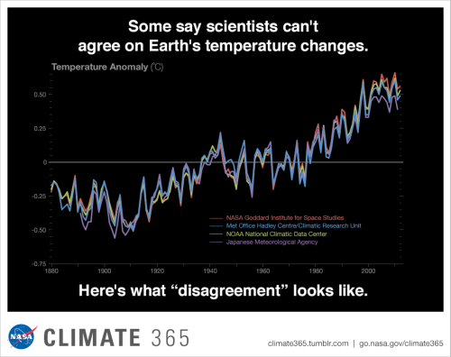

DivestJTS is List College's campaign to divest from fossil fuels at The Jewish Theological Seminary. Divestment from fossil fuel companies which lead the field in human-caused global warming is our first step in the fight for climate and social justice.
We have a moral obligation to create a world free of climate chaos for future generations.
Our Progress
QUICK FACTS:
Source: http://climate.nasa.gov/
Oil Companies have the financial impetus to bring our earth to a point of irreversible change.
THEY MUST BE STOPPED. THEY CAN BE STOPPED.
Peabody Coal’s 2014 annual report stated, “divestment efforts [are] affecting the investment community, which could significantly affect demand for our products or our securities.” It’s time for JTS to join this movement.
When oil and natural gas is burned, it releases Carbon Dioxide (CO2) into the atmosphere, which works to trap heat from the sun in a process called the The Greenhouse Gas Effect. It is obvious that our planet is warming at an alarming rate due to this effect. Often times, people will argue that we can't be sure that global warming is human-caused because we can't even agree on the global temperature. This is a false statement that is used to undermine the severity of climate change and the need for divestment from fossil fuels. As seen in this study from NASA, scientific research institutions from around the globe concur that temperatures have been consistently rising in the last 100 years, coinciding with the rise of industrialism which was and remains heavily dependent on the burning of fossil fuels.
Each year, four international science institutions compile temperature data from thousands of stations around the world and make independent judgments about whether the year was warmer or cooler than average. “The official records vary slightly because of subtle differences in the way we analyze the data,” said Reto Ruedy, climate scientist at NASA’s Goddard Institute for Space Studies. “But they also agree extraordinarily well.”
Source
For more information, please see these websites: